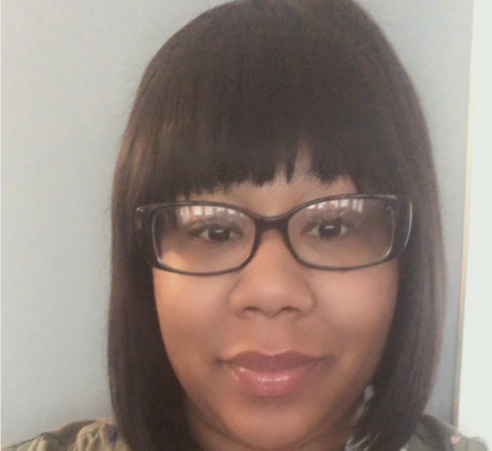
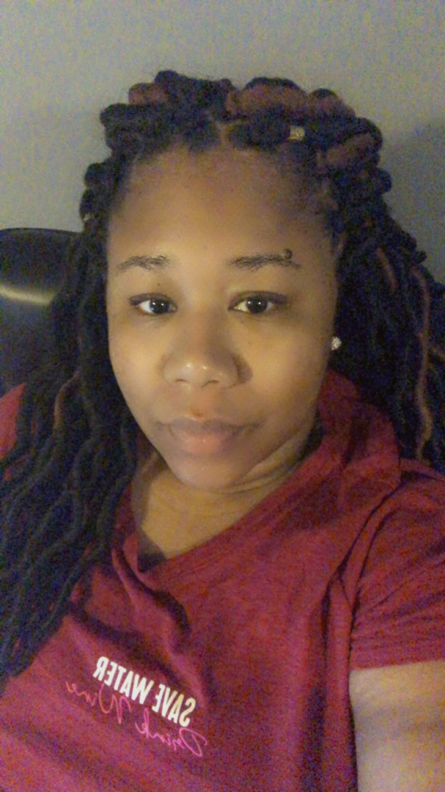
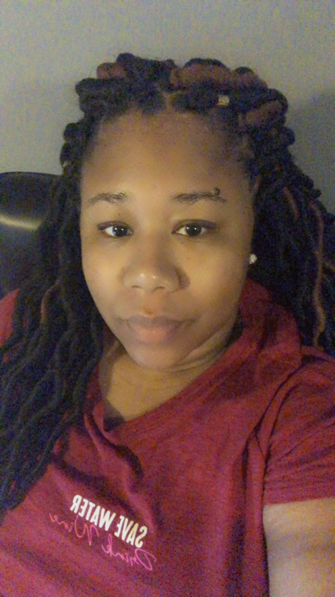

This page is dedicated to Erica Powell. Erica was born in Chicago, Illinois and currently reside there. During her childhood she moved to a few different states (California, Tennessee, New Mexico). She is the oldest of three children. She is a mother of two. She have has a fourteen year old son and a ten year old daughter. She is married to her highschool sweetheart and they will make 14 years of marriage this May.
She has worked in healthcare for 15 years from being on the frontline to now working in management. She has a masters in health care administration and a masters in business administration.
She loves healthcare and as she has gone through her journey she has found a new passion. She loves the process of making sure all processes go smoothly and patient care is the forefront of health care organizations.
Business is a newer passion of hers. She started to learn more about business working in healthcare and it piqued her interest so she double majored so that she could get the full picture of both business and healthcare. After completing grad school she began helping others build their businesses just because she enjoyed the process and helping people accomplish their dreams was a gratifying feeling.
One of her main passions currently is being a spiritual advisor. I loves crystals, studying astrology, reading tarot cards, and helping people find their balance. Spirituality saved her from anxiety, depression and illness. She is currently studying reiki, and herbs and her main goal is to become a healer.
 
